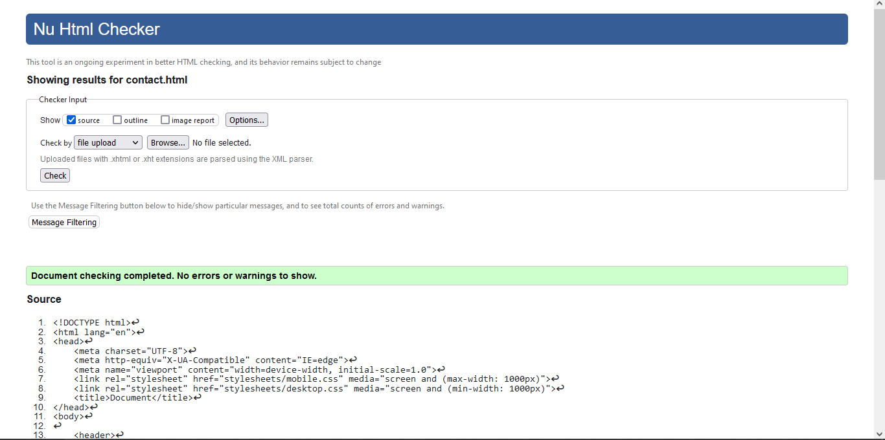
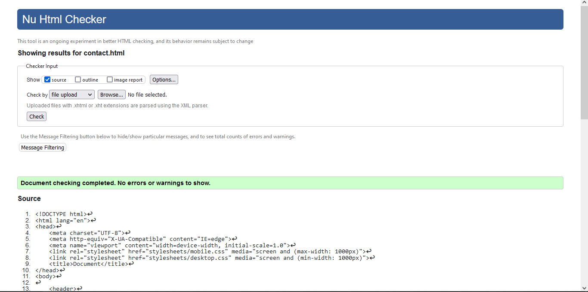

My Learning Experience
Learning HTML and CSS was interesting as it was nice to see how my webpage changed along the way with different CSS and different layouts. I found that, although it wasn't really my thing, it was interesting to see how important it is to design a webpage.
Website Development
I created the layout with HTML implementing a header, aside, sub headers, paragraphs, footer and nav. This was for index.html, blog.html, portfolio.html, contact.html and sitereport.html. For CSS I used two different stylesheets, one for normal computer screens and one for mobiles. I tried to implement a hamburger menu for the mobile site but found this difficult and could not do it in time.
Design Decisions
Originally, I could not decide on a design for my website, though I had started my HTML this indecisiveness delayed me starting my CSS. Finally, I chose to have a grey background with contrasting orange for everything in p tags, h1 and h2 in black and list items in a simple grey colour. The header background was light blue #BEE2E7, the footer dark read #8F002, the side panel grey #72818B and the nav bar purple #4F57AA. I was not inspired by this color palette from the website you recommended: https://www.colourlovers.com/palette/149132/Blue_Hippopotamus and https://www.colourlovers.com/palette/159844/Blue_Fox for the hex colors because I wanted a simple and easy to follow website with a consistent layout. My sitereport.html page shows a background image instead of a colour and I have also used borders throughout.
References
- discord_logo.png. Available: https://discord.com/branding
- github_logo.png. Available: https://github.com/logos
- Instagram_logo.png. Available: https://www.iconfinder.com/icons/5296765/camera_instagram_instagram_logo_icon
- Spotify_logo.png. Available: https://commons.wikimedia.org/wiki/File:Spotify_logo_without_text.svgli
- cat_face.jpg. Available: https://va11halla.fandom.com/wiki/Fore
- holy_grail_background.png. Available: https://www.reddit.com/r/grandorder/comments/bgyj52/cleaned_up_and_upscaled_the_title_screen_perfect/
Validation
 
